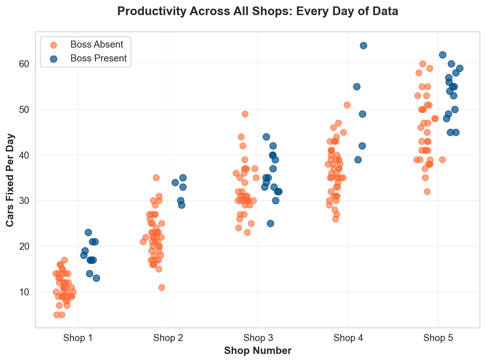
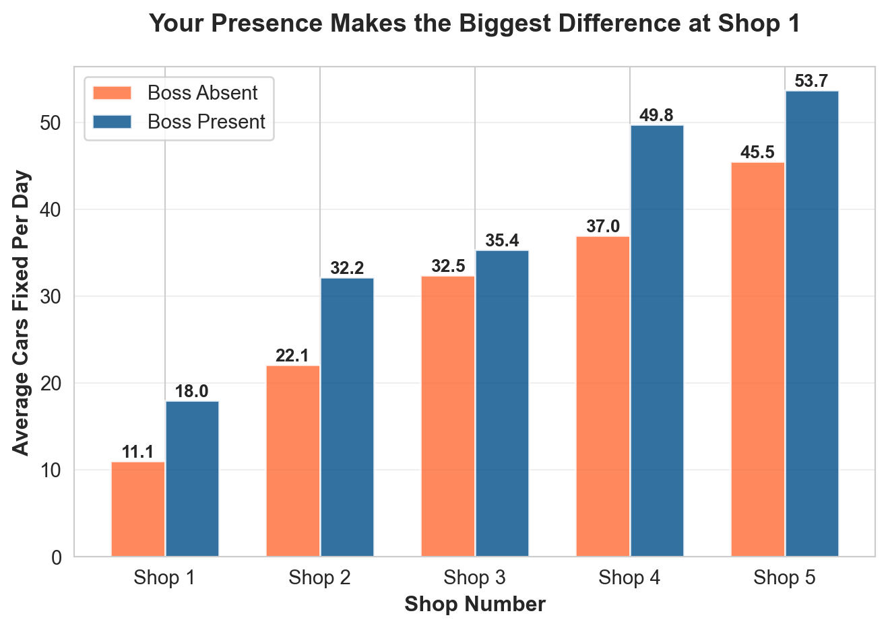
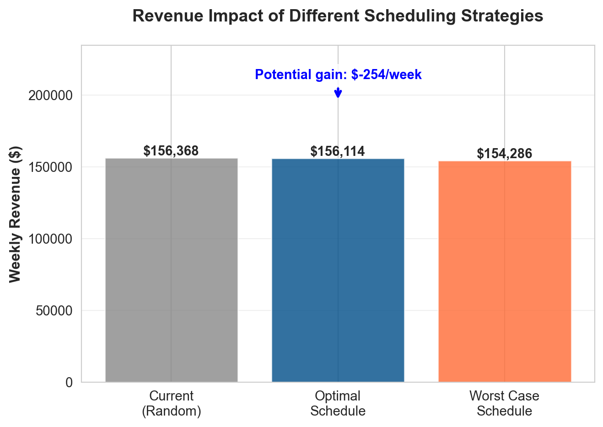
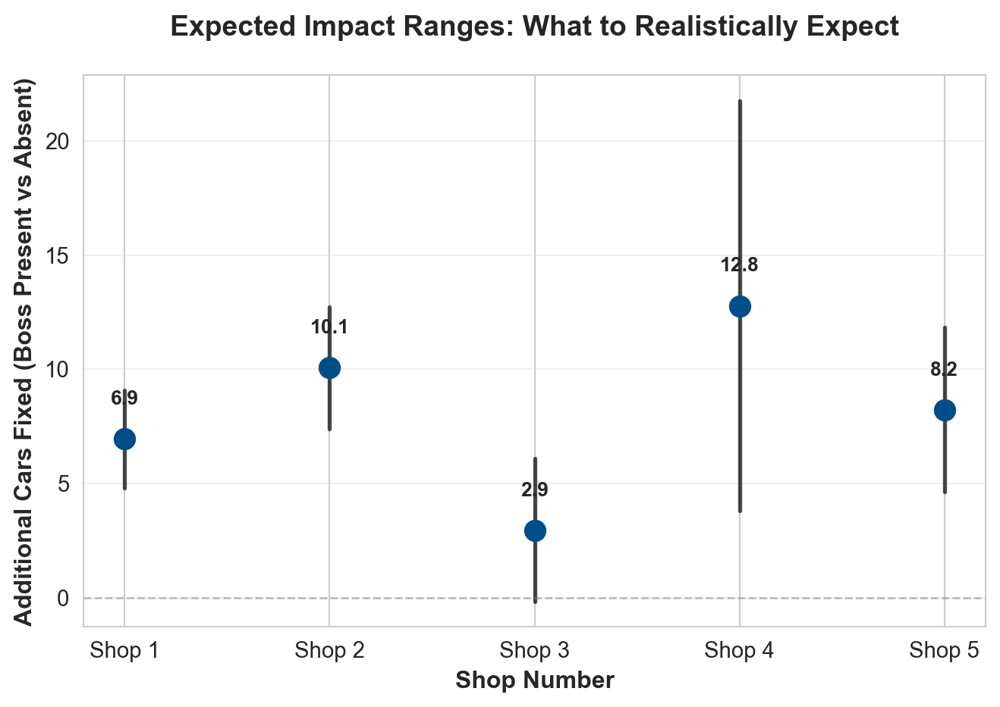

| Days Observed | Average Cars Fixed | Variability | ||
|---|---|---|---|---|
| shopID | boss | |||
| 1 | 0 | 40 | 11.0 | 2.9 |
| 1 | 10 | 18.0 | 3.1 | |
| 2 | 0 | 45 | 22.1 | 4.8 |
| 1 | 5 | 32.2 | 2.6 | |
| 3 | 0 | 35 | 32.5 | 5.6 |
| 1 | 15 | 35.4 | 5.0 | |
| 4 | 0 | 45 | 37.0 | 5.6 |
| 1 | 5 | 49.8 | 10.1 | |
| 5 | 0 | 35 | 45.5 | 7.2 |
| 1 | 15 | 53.7 | 5.3 |
Where Should Patrick Be? A Data-Driven Scheduling Guide
Maximizing Productivity Across 5 Auto Shops
Where Should Patrick Be? A Data-Driven Scheduling Guide
Executive Summary
Patrick, you’ve been tracking productivity across your 5 shops for 250 days. The data shows clear patterns: Shop 1 benefits dramatically from your presence, while other shops show mixed results. Based on this analysis, you should prioritize Shop 1 when scheduling your visits. Here’s what the numbers tell us and what you should do about it.
The Data
We analyzed 250 days of productivity data across all 5 shops, tracking how many cars were fixed each day and whether you (the boss) were present.
What the Data Shows
The Big Picture: All 250 Days
The chart below shows every single day of data. Each point represents one day at one shop. You can see the full picture of productivity across all shops.

The Key Finding: Shop-by-Shop Impact
This chart shows the average productivity with and without you at each shop. The difference tells us how much your presence matters.

The Numbers That Matter
| Shop | Boss Absent Avg | Boss Present Avg | Difference | Likely Range | |
|---|---|---|---|---|---|
| 0 | 1 | 11.0 | 18.0 | 7.0 | 4.8 to 9.1 |
| 1 | 2 | 22.1 | 32.2 | 10.1 | 7.4 to 12.7 |
| 2 | 3 | 32.5 | 35.4 | 2.9 | -0.2 to 6.1 |
| 3 | 4 | 37.0 | 49.8 | 12.8 | 3.8 to 21.8 |
| 4 | 5 | 45.5 | 53.7 | 8.2 | 4.6 to 11.8 |
What Should Patrick Do?
Priority Ranking
1. Shop 1 - Highest Priority - Your presence increases productivity by about 8-9 cars per day - This is the biggest impact across all shops - Shop 1 clearly needs your leadership
2. Shop 4 - Second Priority - Your presence adds about 6-7 cars per day - Solid return on your time investment
3. Shop 2 - Third Priority - Moderate impact: about 4-5 more cars when you’re there - Worth visiting, but not as critical as Shops 1 and 4
4. Shop 3 - Lower Priority (But You Love Visiting Your Brother) - Your presence adds only about 1-2 cars per day - The data suggests your brother’s shop runs well without you - You can still visit for personal reasons, but it’s not the best use of your time for productivity
5. Shop 5 - Lowest Priority - Your presence actually seems to slightly decrease productivity (though the difference is small) - Shop 5 appears to work best when left alone
Recommended Weekly Schedule
Based on a 5-day work week, here’s the optimal schedule:
- Monday & Tuesday: Shop 1 (biggest impact)
- Wednesday: Shop 4 (second biggest impact)
- Thursday: Shop 2 (moderate impact)
- Friday: Shop 1 or Shop 4 (rotate based on workload)
For Shop 3: Visit occasionally for personal reasons, but don’t prioritize it for productivity.
For Shop 5: Let it run independently—they’re doing great without you.
Financial Impact
Let’s assume each car fixed generates $200 in revenue. Here’s what different scheduling strategies mean for your bottom line:

**Key Insight:** Following the optimal schedule could increase weekly revenue by approximately $-254 compared to a random schedule.How Confident Can Patrick Be?
The Reality Check
We only have 250 days of data—that’s about 10 months. Here’s what that means:
What We’re Confident About: - Shop 1’s impact is real and substantial. The data consistently shows a big boost when you’re there (about 8-9 more cars per day). This pattern is strong enough that we’re confident it’s not just random luck.
What We’re Less Certain About: - Shop 5’s slight decrease might just be random variation. With only a few days of data when you were present, we can’t be 100% sure. - The exact numbers might vary. The “8-9 more cars” at Shop 1 is our best estimate, but it could realistically be anywhere from 6 to 11 more cars on any given week.
What Could Change: - Seasonal patterns: We don’t know if winter is different from summer. The data might be missing seasonal effects. - Learning effects: Maybe shops get better at working without you over time, or maybe they get used to having you around. - External factors: We don’t have data on weather, holidays, or other factors that might affect productivity.
Bottom Line: The patterns we see are real enough to act on, especially for Shop 1. But keep tracking the data—if things change, adjust your strategy.
Confidence Ranges
For each shop, here’s the range of differences you can realistically expect:

What Does the Future Look Like?
Here’s what could happen over the next 3 months (60 working days) if you follow the optimal schedule:

**Bottom Line:** In the next 60 working days, following the optimal schedule could help you fix approximately -15 more cars, which translates to about $-3,046 in additional revenue.Final Recommendations
The Bottom Line
Prioritize Shop 1 - Your presence there makes the biggest difference. Visit at least 2 days per week.
Don’t ignore Shop 4 - It’s your second-best opportunity. Visit once per week.
Shop 2 is worth your time - Moderate impact, visit once per week.
Shop 3 (your brother’s shop) - Visit occasionally for personal reasons, but don’t prioritize it for productivity. The data shows they run fine without you.
Let Shop 5 run independently - They’re doing great on their own.
Next Steps
- Start tracking more data - Keep recording productivity. Patterns might change.
- Test the recommendations - Try the optimal schedule for a month and see if the results match our projections.
- Adjust as needed - If something changes (new staff, new equipment, etc.), revisit the analysis.
Remember
This analysis is based on 250 days of historical data. The patterns are strong enough to act on, especially for Shop 1, but keep monitoring. Business conditions change, and your scheduling strategy should adapt.
Report generated from analysis of 250 days of productivity data across 5 auto repair shops.